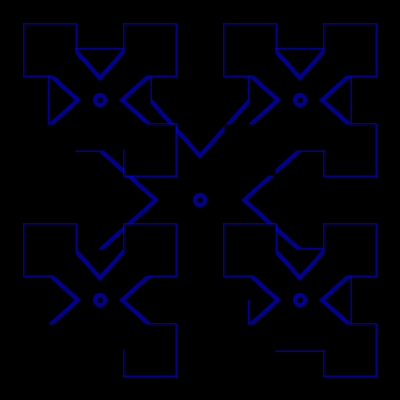
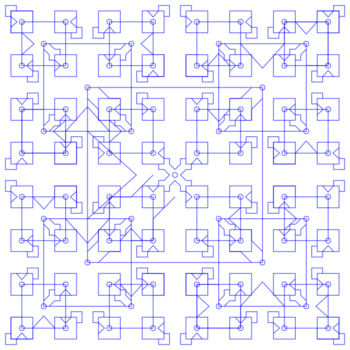
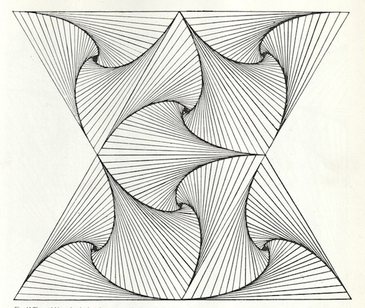

retro plotter art
1960s - 1980s
Sher Minn
Recurse Center alumni
Mini 1 2019, Fall 1 2015
PLOTTERS!!
🤖➡️✏️

plotters have a very long history

CalComp advertisement, 1969 [source: Computer History Museum]
mechanical plotter

CalComp 565, early drum plotter introduced in 1959
Interesting plotter art
Fractals
Fractals are infinitely complex patterns that are self-similar across different scales

Stained Glass Window, 1963
"...generated on the principle of the 'snow flake curve' with a data plotter"





Emergent patterns
emergence is the condition of an entity having properties its parts do not have, due to interactions among the parts




Four flies problem
Four flies sit at the corners of a card table, facing inward. They start simultaneously walking at the same rate, each directing its motion steadily toward the fly on its right. Find the path of each.